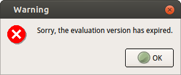

Remove IDA Evaluation Version Time Limitation
Table of Contents
IDA Version: 6.8.150413 (32-bit)
OS: Ubuntu 14.04.5 x86_64

first try
first, i wanna use LD_PRELOAD to solve this problem.
#include <sys/time.h>
int gettimeofday(struct timeval *tv, struct timezone *tz)
{
tv->tv_sec = 1429980388; // Sun Apr 26 00:46:28 CST 2015
tv->tv_usec = 0;
}
then, build it and start ida again
gcc -shared -o inject.so inject.c export ./inject.so ./idaq
still alert
decompile and patch
so, we need to decompile it, analyse and patch
objdump -sFD idaq > tmp
open tmp file, search expired, found 1 result:
82da860 732e0a50 6c656173 65207365 6e642025 s..Please send % 82da870 7320746f 203c7375 70706f72 74406865 s to <support@he 82da880 782d7261 79732e63 6f6d3e00 49434f4e x-rays.com>.ICON 82da890 20455252 4f520a41 55544f48 49444520 ERROR.AUTOHIDE 82da8a0 4e4f4e45 0a536f72 72792c20 74686520 NONE.Sorry, the 82da8b0 6576616c 75617469 6f6e2076 65727369 evaluation versi 82da8c0 6f6e2068 61732065 78706972 65642e00 on has expired..
as we can see, the string, 'Sorry, …' starts at 0x82da8a5
search 82da8a5, found nothing
this is because target string is not 'Sorry, …', it is 'ICON ERROR…'
search 82da88c,found:
8093852: c7 04 24 8c a8 2d 08 movl $0x82da88c,(%esp) 8093859: e8 92 ca ff ff call 80902f0 <_ZN2QT6qDebugEv+0xfef0> (File Offset: 0x482f0) 809385e: a1 9c 49 3f 08 mov 0x83f499c,%eax
then, search which line jmps to this address 8093852
so, search 8093852, found only 1 result:
80936dd: 84 c0 test %al,%al 80936df: 0f 85 6d 01 00 00 jne 8093852 <_ZN2QT6qDebugEv+0x13452> (File Offset: 0x4b852)
the simplest way is nop all the 6 bytes in line 80936df
file offset:
80936df: 0f 85 6d 01 00 00 jne 8093852 <_ZN2QT6qDebugEv+0x13452> (File Offset: 0x4b852)
0x80936df - 0x8093852 + 0x4b852 = 0x4b6df
change all the 6 bytes(start at 0x4b6df) to 90 (nop), save file, test again, ok